לב העוטף · שדרותדווקא עכשיו עוברים לשדרות
בהפקת
היא בהריון, הם עומדים בדשא של דירת הגן ויודעים: זה המקום לבנות משפחה. גן ילדים בהליכה, שכנים, רכבת שמביאה אותו הביתה מהעבודה.
הגרסה הסופית לצפייה: 20 שניות, 9:16 לרשתות החברתיות, עם קריינות, מוזיקה וכרטיס הסיום.
הטקסט מהבריף שלכם, מילה במילה, כפי שהקריינית אומרת אותו בסרטון.
| קריינית | שדרות בתנופה של צמיחה והתחדשות. | 0–3 |
| קריינית | זה המקום לבנות משפחה. | 3–6 |
| קריינית | חינוך איכותי, קהילה חזקה, | 6–9 |
| קריינית | קרוב לרכבת, והטבות מס משמעותיות. | 9–12 |
| קריינית | דווקא עכשיו, עוברים לשדרות, לשכונת האקדמיה. | 12–16 |
| קריינית | מוגש מטעם עיריית שדרות ומשרד הבינוי והשיכון. | 16–20 |
| כיתוב | כל משפט של הקריינית על המסך · כרטיס סיום (17–20) |
כל דמות מוצגת בארבע זוויות פנים ובעמידה מלאה, בלבוש של הסרטון.
 זוג 1היא: בהריון, שיער כהה גלי בפקעת, עור זית, שמלה לבנה וחולצת ג'ינס. הוא: שיער כהה קצר, זקן קצר, חולצת אוקספורד תכלת, תיק גב.
זוג 1היא: בהריון, שיער כהה גלי בפקעת, עור זית, שמלה לבנה וחולצת ג'ינס. הוא: שיער כהה קצר, זקן קצר, חולצת אוקספורד תכלת, תיק גב. זוג 1
זוג 1 השכונה והקמפוס מהאווירמימין: ההדמיה שלכם · משמאל: כך זה ייראה בסרטון. מבט רחפן: עצי קמפוס ספיר בקדמה, בנייני האקדמיה מאחור, לפי ההדמיה שלכם. הפריים הפותח של שוט 1 ובסיס לשוט 6.
השכונה והקמפוס מהאווירמימין: ההדמיה שלכם · משמאל: כך זה ייראה בסרטון. מבט רחפן: עצי קמפוס ספיר בקדמה, בנייני האקדמיה מאחור, לפי ההדמיה שלכם. הפריים הפותח של שוט 1 ובסיס לשוט 6.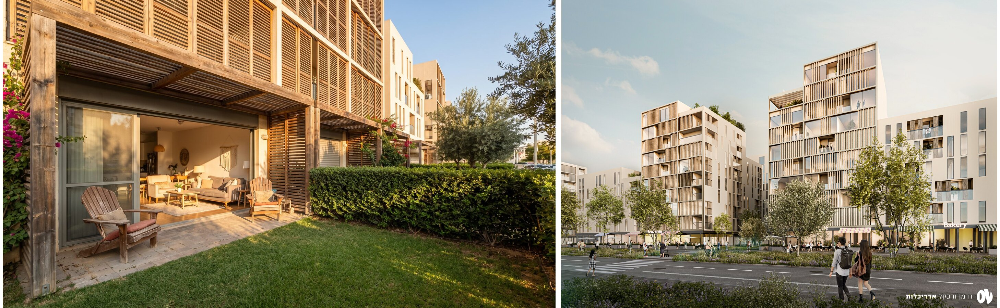
דירת הגןמימין: ההדמיה שלכם · משמאל: כך זה ייראה בסרטון. דשא, פרגולת עץ, דלת הזזה לסלון, רפפות העץ מעל. שוטים 2 ו-5.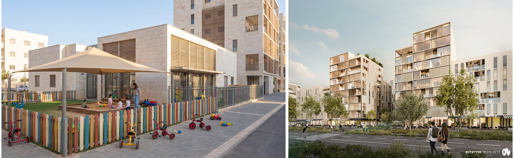
גן הילדים ברחובמימין: ההדמיה שלכם · משמאל: כך זה ייראה בסרטון. גן עירוני עם חצר מגודרת, ארגז חול תחת סככה, ילדים וגננת, הבניינים מאחור. שוט 3. הרחובמימין: ההדמיה שלכם · משמאל: כך זה ייראה בסרטון. אבן בהירה ורפפות עץ כמו בהדמיה, שביל הליכה רחב, עגלה בכניסה. שוט 3.
הרחובמימין: ההדמיה שלכם · משמאל: כך זה ייראה בסרטון. אבן בהירה ורפפות עץ כמו בהדמיה, שביל הליכה רחב, עגלה בכניסה. שוט 3.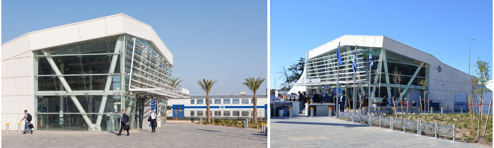
תחנת הרכבת שדרותמימין: התמונה האמיתית של התחנה · משמאל: כך זה ייראה בסרטון. נבנתה מתמונה אמיתית של התחנה: הגג הלבן, חזית הזכוכית והקורות האלכסוניות, רכבת קומותיים. שוט 4.אותו מבנה בשני הסרטונים, בצבעי השכונה: לוגו השכונה, "דווקא עכשיו עוברים לשדרות", שורת "מוגש מטעם", הלוגואים ו"הופק ב❤ על ידי" אפקט.
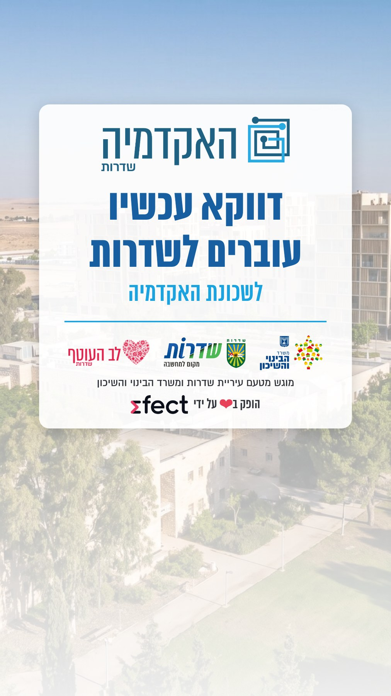
אותה תבנית בכחול ולבן של האקדמיה.כך הסרטון בנוי בגרסה הסופית: לכל שוט פריים מהסרטון עצמו, מה רואים, מה שומעים, איך המצלמה מצלמת, האור והרגש.
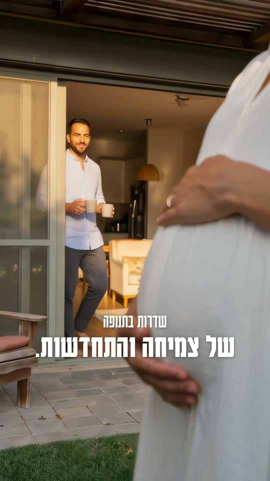
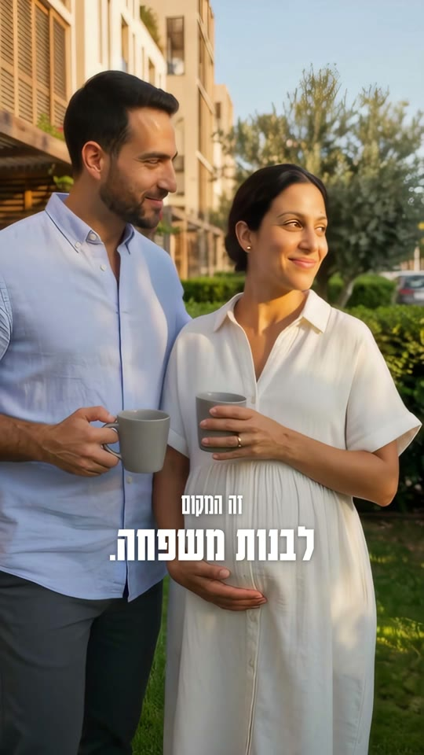
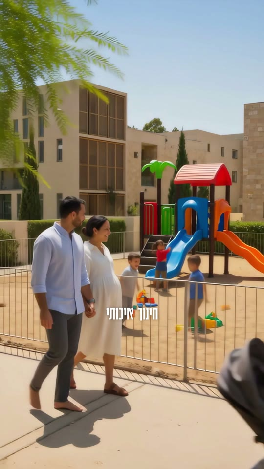
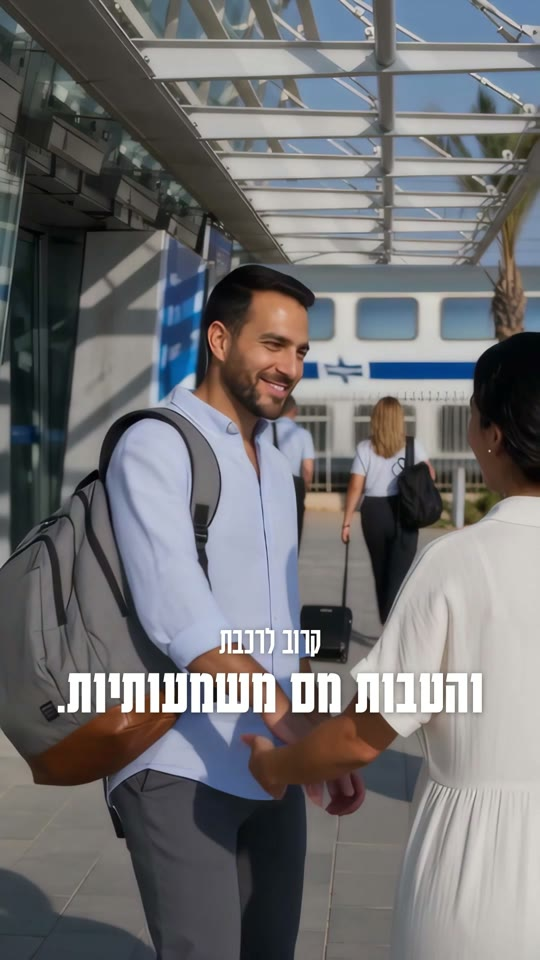
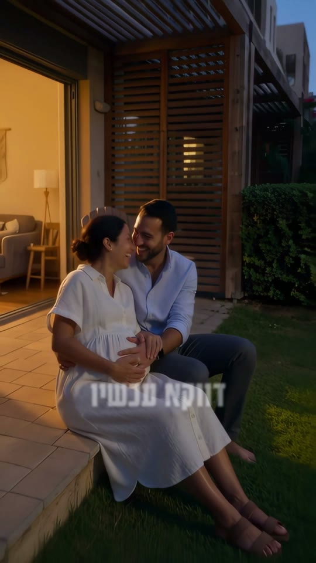
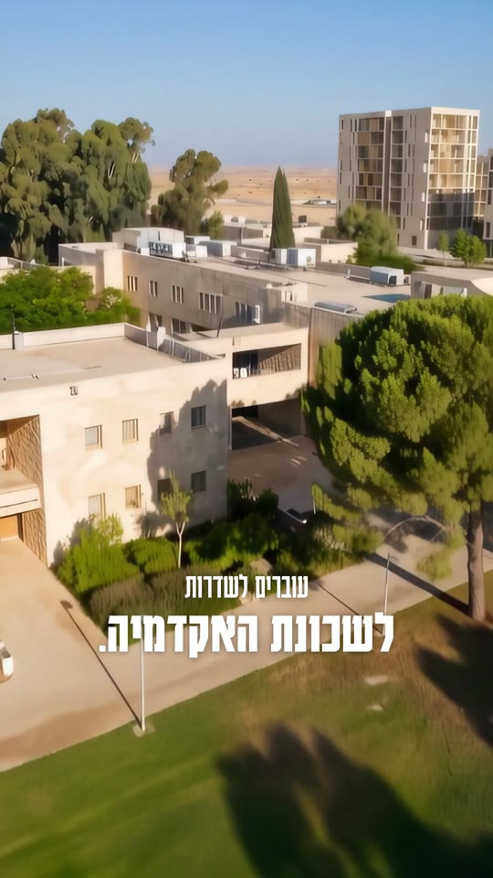
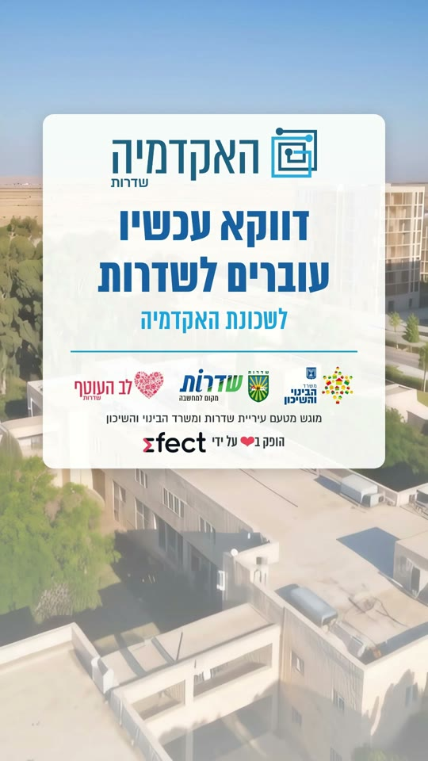
כל משפט של הקריינית מופיע גם על המסך בכתוביות, מחוץ לפנים, וכרטיס הסיום סוגר את הסרטון.
שני הסרטונים מופקים דרך Efect, בהובלת אוראל לוי: קריאטיב, תסריט, בימוי, יצירת הדמויות והשכונות, עריכה, קול, מוזיקה וגרפיקה, עד סרטונים מוכנים לפרסום.